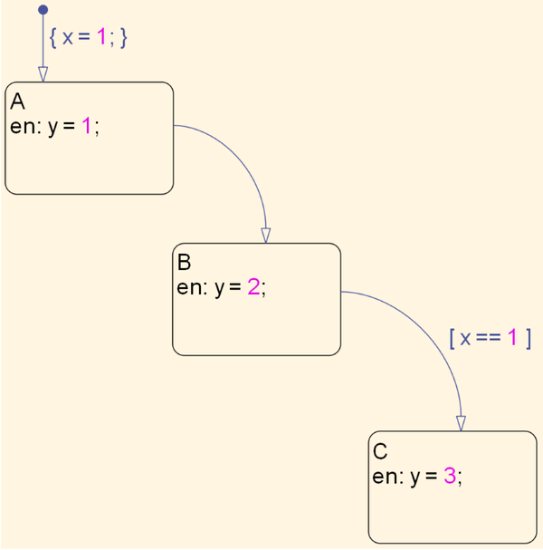
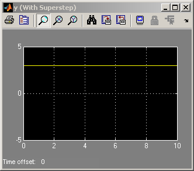
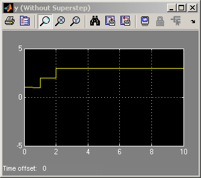
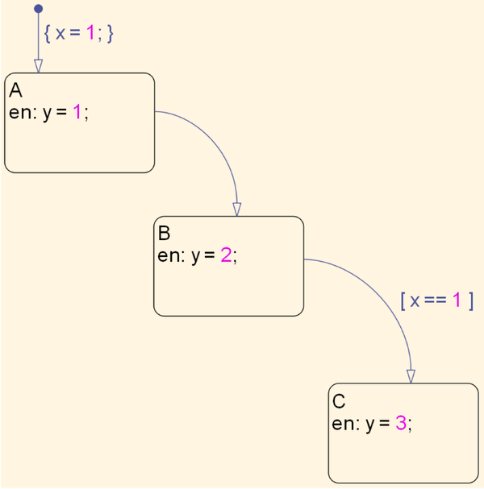
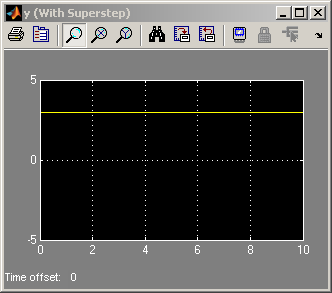
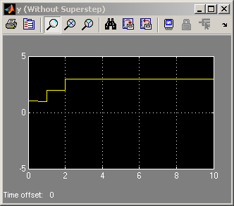

Superstep
Stateflow® チャートで Superstep セマンティクスを有効にすると、次のシミュレーション ステップに進む前に現在の状態からあらゆる遷移を繰り返し行って、チャートを安定状態設定にすることができます。このデモでは、完全に一致した 2 つの Stateflow チャートを示します。ただし、1 つは Superstep モードが無効になっており、もう 1 つは Superstep モードが有効になっています。
シミュレーションを実行し、スコープで 2 つのチャートからの出力を比較します。Without Superstep チャートの出力では最終的な安定状態に達するまで値がステップ内で変化し、一方の With Superstep チャートでは、Superstep セマンティクスにより、値が即座に安定状態に到達することが示されています。
   
  